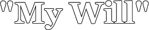

© by Nick McClellan
The sky is curled around no moon tonight
High in the dark, escaping us.
Forgive these moments we discard
The shadows beyond which we see nothing.
I will follow constant behind your lead and surrender.
It's not that we can't see this space
It's that we choose not to.
Coming down to the water after a rain
to catch a sun set,
I watched you then.
Walking carefully through the mud bank
avoiding every stone,
and stepping into our canoe.
We glide across the surface,
drifting beneath the expiring sky.
An orange glow pervades the scene
and you sigh and half-smile.
I watched you then, Kikyo,
and you did not look at me.
I'm sure you had your reasons.
How you fist clinches and your teeth grit
as his nails rip into your dress,
cut into your shoulder
and down your chest,
just as you shiver when the blood comes down
collecting in the heels of your shoe--
And you think it was me.
Seeing you stoop to the ground
Beneath your wasted breath,
Cursing me.
I struggled to conceive a reason
that you'd think I hurt you.
And you cradle the folds of your dress
bleeding, above your waist,
where I held you.
Your body, writhing in dirt.
Filthy, dying, and in pain.
You returned to me, years after your death
Standing motionless in the water.
Your hands, still against your side,
while you stalk curiously past me
like a breeze around a curtain.
You pretend as if I did not recall
your doubting smile, the wounding arrow
and the permeating dusk.
"Come with me," you whisper.
"Cur, suffer me."
High in the dark, a new moon waits.
The sky curls above the forest
where centipedes stalk quietly.
The water parts as we advance,
stepping deeper.
Forgive my will, Kagome.
You never had me.